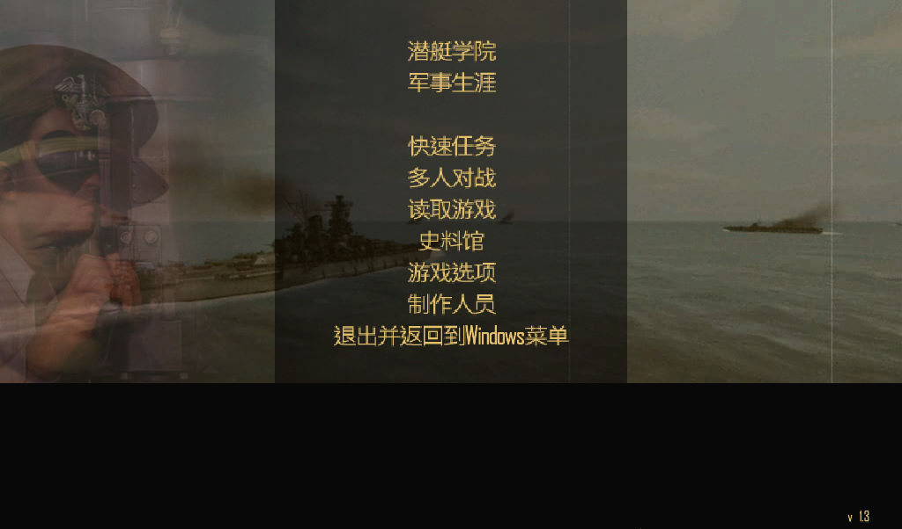
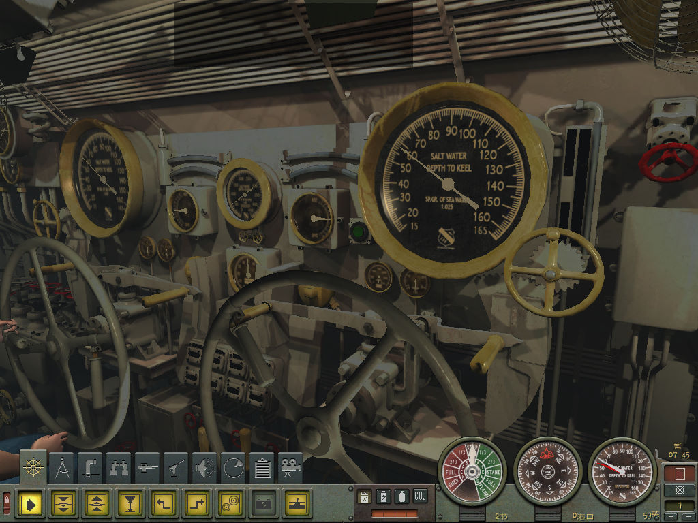

名稱：獵殺潛航4：太平洋海狼 (Silent Hunter 4: Wolves of the Pacific，簡中／英文版)
簡介：Ubisoft 2007年出品的潛艦指揮作戰模擬遊戲，2008年再推出「U型潛艇任務（U-Boat
Missions）」資料片 [待補]。


保護：主程式光碟SecuROM 7.39，可使用SRLoader啟動；資料片已去除SecuROM保護
備註：簡中版裡的英文版光碟，版本為1.3。
備註：安裝完資料片，版本升至1.5。
備註：若要安裝資料片，必須全部保持英文版，不可進行簡中漢化，否則顯示會變亂碼。
檔案：chs_setup.rar = 官方簡中漢化檔（只適用1.3版，已去除SecuROM保護，需放入光碟）
nocd13_eng.rar = 英文1.3免光碟檔（簡中版不可使用）